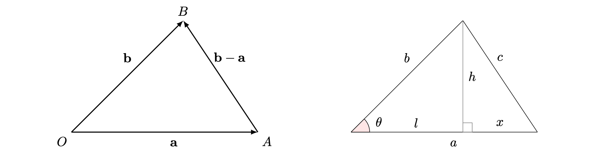

Proof: Scalar product
Before reading this proof sheet, it is recommended that you read Guide: The scalar product. In addition, reading Guide: Introduction to vectors and Guide: Vector addition and scalar multiplication is essential, and reading either Guide: Trigonometry (degrees) or Guide: Trigonometry (radians) is useful.
The starting point of this proof sheet is the algebraic definition of the scalar product:
Let \(\mathbf{a} = a_1 \mathbf{i} + a_2 \mathbf{j} + a_3 \mathbf{k}\) and \(\mathbf{b} = b_1 \mathbf{i} + b_2 \mathbf{j} + b_3 \mathbf{k}\) be two vectors. The scalar product of \(\mathbf{a}\) and \(\mathbf{b}\), written as \(\mathbf{a}\cdot\mathbf{b}\), is given by \[\mathbf{a}\cdot\mathbf{b} = a_1b_1 + a_2b_2 + a_3b_3.\]
From here, the proof sheet will start with the proof of properties (1) to (5), which can be done using the algebraic definition of the scalar product. Then, the equivalence of the two definitions of scalar product is shown. Once this is done, it is safe to use the geometric definition of the scalar product in showing properties (6) and (7).
This peculiar structure is necessary to ensure that no un-proved statements are used before they are known! This guide uses column notation for vectors; this is purely for space reasons.
Proof of properties (1) – (5)
Proof of property (1)
For all vectors \(\mathbf{a}\) and \(\mathbf{b}\): \[\mathbf{a}\cdot\mathbf{b}=\mathbf{b}\cdot\mathbf{a}.\]
Suppose that \(\mathbf{a} = \begin{pmatrix}a_1\\a_2\\a_3\end{pmatrix}\), \(\mathbf{b} = \begin{pmatrix}b_1\\b_2\\b_3\end{pmatrix}\). By the algebraic definition of scalar product \[\begin{align*} \mathbf{a}\cdot\mathbf{b} &= \begin{pmatrix}a_1\\a_2\\a_3\end{pmatrix}\cdot \begin{pmatrix}b_1\\b_2\\b_3\end{pmatrix} = a_1b_1 + a_2b_2 + a_3b_3 \end{align*}\] Since \(a_1b_1 = b_1a_1\), \(a_2b_2 = b_2a_2\), and \(a_3b_3 = b_3a_3\), you can write \[\begin{align*} \mathbf{a}\cdot\mathbf{b} &= a_1b_1 + a_2b_2 + a_3b_3 = b_1a_1 + b_2a_2 + b_3a_3 \end{align*}\] You can recognize this final term as \(\mathbf{b}\cdot\mathbf{a}\) and so \[\begin{align*} \mathbf{a}\cdot\mathbf{b} &= b_1a_1 + b_2a_2 + b_3a_3 = \mathbf{b}\cdot\mathbf{a} \end{align*}\] as required.
Proof of property (2)
The scalar product of any vector \(\mathbf{a}\) with the zero vector \(\mathbf{0}\) is 0, so: \[\mathbf{a}\cdot\mathbf{0}=0\]
Suppose that \(\mathbf{a} = \begin{pmatrix}a_1\\a_2\\a_3\end{pmatrix}\) and you know that \(\mathbf{0} = \begin{pmatrix}0\\0\\0\end{pmatrix}\). By the algebraic definition of scalar product \[\begin{align*} \mathbf{a}\cdot\mathbf{0} &= \begin{pmatrix}a_1\\a_2\\a_3\end{pmatrix}\cdot \begin{pmatrix}0\\0\\0\end{pmatrix} = a_1(0) + a_2(0) + a_3(0) = 0 + 0 + 0 = 0 \end{align*}\] as required.
Proof of property (3)
For all vectors \(\mathbf{a},\mathbf{b},\mathbf{c}\), it follows that: \[\mathbf{a}\cdot (\mathbf{b}+\mathbf{c}) = \mathbf{a}\cdot\mathbf{b}+\mathbf{a}\cdot\mathbf{c}\]
Suppose that \(\mathbf{a} = \begin{pmatrix}a_1\\a_2\\a_3\end{pmatrix}\), \(\mathbf{b} = \begin{pmatrix}b_1\\b_2\\b_3\end{pmatrix}\), and \(\mathbf{c} = \begin{pmatrix}c_1\\c_2\\c_3\end{pmatrix}\). You know from Guide: Vector addition and scalar multiplication that \[\mathbf{b} + \mathbf{c} = \begin{pmatrix}b_1 + c_1\\b_2+c_2\\b_3+c_3\end{pmatrix}.\] So from the algebraic definition of the scalar product: \[\begin{align*} \mathbf{a}\cdot(\mathbf{b}+\mathbf{c}) &= \begin{pmatrix}a_1\\a_2\\a_3\end{pmatrix}\cdot \begin{pmatrix}b_1 + c_1\\b_2+c_2\\b_3+c_3\end{pmatrix}\\ &= a_1(b_1 + c_1) + a_2(b_2 + c_2) + a_3(b_3 + c_3) \end{align*}\] Expanding the brackets and rearranging gives \[\begin{align*} \mathbf{a}\cdot(\mathbf{b}+\mathbf{c}) &= a_1(b_1 + c_1) + a_2(b_2 + c_2) + a_3(b_3 + c_3)\\ &= a_1b_1 + a_1c_1 + a_2b_2 + a_2c_2 + a_3b_3 + a_3c_3\\ &= (a_1b_1 + a_2b_2 + a_3b_3) + (a_1c_1 + a_2c_2 + a_3c_3) \end{align*}\] You can recognize these final two terms as \(\mathbf{a}\cdot\mathbf{b}\) and \(\mathbf{a}\cdot\mathbf{c}\) respectively. so \[\begin{align*} \mathbf{a}\cdot(\mathbf{b}+\mathbf{c}) &= (a_1b_1 + a_2b_2 + a_3b_3) + (a_1c_1 + a_2c_2 + a_3c_3) = \mathbf{a}\cdot\mathbf{b} + \mathbf{a}\cdot\mathbf{c} \end{align*}\] as required.
Proof of property (4)
If \(\mathbf{a},\mathbf{b}\) are vectors and \(\lambda\) (pronounced ‘lambda’) is a scalar, then \[(\lambda\mathbf{a})\cdot\mathbf{b}=\lambda(\mathbf{a}\cdot\mathbf{b})\]
Suppose that \(\mathbf{a} = \begin{pmatrix}a_1\\a_2\\a_3\end{pmatrix}\) and \(\mathbf{b} = \begin{pmatrix}b_1\\b_2\\b_3\end{pmatrix}\) are vectors and that \(\lambda\) is a scalar. You know from Guide: Vector addition and scalar multiplication that \[\lambda\mathbf{a} = \begin{pmatrix}\lambda a_1\\\lambda a_2\\\lambda a_3\end{pmatrix}\] By the algebraic definition of scalar product \[\begin{align*} (\lambda\mathbf{a})\cdot\mathbf{b} &= \begin{pmatrix}\lambda a_1\\\lambda a_2\\\lambda a_3\end{pmatrix}\cdot \begin{pmatrix}b_1\\b_2\\b_3\end{pmatrix} = (\lambda a_1)b_1 + (\lambda a_2)b_2 + (\lambda a_3)b_3 \end{align*}\] Factorizing the right hand side by a common factor of \(\lambda\) gives You can recognize this final term as \(\mathbf{b}\cdot\mathbf{a}\) and so \[\begin{align*} (\lambda\mathbf{a})\cdot\mathbf{b} &= (\lambda a_1)b_1 + (\lambda a_2)b_2 + (\lambda a_3)b_3 = \lambda(a_1b_1 + a_2b_2 + a_3b_3) \end{align*}\] You can recognize the term in brackets as \(\mathbf{a}\cdot\mathbf{b}\), and so \[\begin{align*} (\lambda\mathbf{a})\cdot\mathbf{b} &= \lambda(a_1b_1 + a_2b_2 + a_3b_3) = \lambda(\mathbf{a}\cdot\mathbf{b}) \end{align*}\] as required.
Proof of property (5)
The scalar product of a vector \(\mathbf{a}\) with itself is the square of its magnitude: \[\mathbf{a}\cdot\mathbf{a}=|\mathbf{a}|^2\]
Using the algebraic definition for the scalar product, you can work out that for a general vector \(\mathbf{a} = a_1\mathbf{i} + a_2\mathbf{j} + a_3\mathbf{k}\): \[\mathbf{a}\cdot\mathbf{a} = a_1^2 + a_2^2 + a_3^2 = \left(\sqrt{a_1^2 + a_2^2 + a_3^2}\right)^2 = |\mathbf{a}|^2.\]
Proof of equivalence of algebraic and geometric definitions
The main goal in this proof is to show that \(\mathbf{a}\cdot\mathbf{b}\) as defined above is also equal to \(|\mathbf{a}||\mathbf{b}|\cos(\theta)\).
In order to prove the equivalence of these definitions, you will need properties (1), (3) and (5) from Guide: The scalar product.
Place the starts of the two vectors \(\mathbf{a}\) and \(\mathbf{b}\) at the same point. Call this base point \(O\). Notice that the angle of \(\mathbf{a}\) and \(\mathbf{b}\) at the point \(0\) is the smallest angle between them; call this angle \(\theta\).
Consider the plane formed by the end of \(\mathbf{b}\) (at point \(B\)) and formed at the tip of \(\mathbf{a}\) (at point \(A\)). The points \(O,A,B\) form a plane. Now, let \(a\) be the length of \(\mathbf{a}\), \(b\) be the length of \(\mathbf{b}\) and \(c\) be the length of \(\mathbf{b}-\mathbf{a}\).
The points \(OAB\) therefore form a triangle with side lengths \(a,b,c\). Drop a perpendicular from \(B\) to the line \(OA\); this perpendicular line has length \(h\), and splits the line \(OA\) into lengths \(l + x = a\), where the line of length \(l\) is from the point \(O\) to the intersection of the perpendicular.
All of this information is shown in Figure 1.

Using trigonometry, the height of the triangle in Figure 1 is \(h=b\sin(\theta)\). Looking at the diagram again, \(l=b\cos(\theta)\) and \[x=a-l=a-b\cos(\theta).\]
Using Pythagoras’s theorem, \[h^2+x^2=c^2\] and so \[b^2\sin^2(\theta)+(a-b\cos(\theta))^2=c^2=|\mathbf{b}-\mathbf{a}|^2\] (the length of \(\mathbf{b}-\mathbf{a})\). Expanding out the brackets on the left hand side obtains \[b^2-2ab\cos(\theta)+a^2=|\mathbf{b}-\mathbf{a}|^2\] Using property (5) from above: \[|\mathbf{b}-\mathbf{a}|^2=(\mathbf{b}-\mathbf{a})\cdot(\mathbf{b}-\mathbf{a})\] Using property (1), property (3) and property (5), \[(\mathbf{b}-\mathbf{a})\cdot(\mathbf{b}-\mathbf{a})=\mathbf{b}\cdot\mathbf{b}-2\mathbf{a}\cdot\mathbf{b}+\mathbf{a}\cdot\mathbf{a} = |\mathbf{b}|^2-2\mathbf{a}\cdot\mathbf{b}+|\mathbf{a}|^2\] Remember from above that \(|\mathbf{a}|^2=a^2\) and \(|\mathbf{b}|^2=b^2\), then \[b^2-2ab\cos(\theta)+a^2=b^2-2\mathbf{a}\cdot\mathbf{b}+a^2\] Cancelling the terms \(a^2\) and \(b^2\) gives \[ab\cos(\theta)=\mathbf{a}\cdot\mathbf{b}\] and so \(\mathbf{a}\cdot\mathbf{b} = |\mathbf{a}||\mathbf{b}|\cos(\theta)\) as required.
Proof of properties (6) and (7)
Proof of property (6)
If two vectors \(\mathbf{a}\) and \(\mathbf{b}\) are parallel (so \(\mathbf{a}\) is a scalar multiple of \(\mathbf{b}\) by a positive scalar; see Guide: Vector addition and scalar multiplication), then \[\mathbf{a}\cdot\mathbf{b}=|\mathbf{a}||\mathbf{b}|.\] Similarly, if \(\mathbf{a}\) and \(\mathbf{b}\) are anti-parallel (so \(\mathbf{a}\) is a scalar multiple of \(\mathbf{b}\) by a negative scalar; see Guide: Vector addition and scalar multiplication), then \[\mathbf{a}\cdot\mathbf{b}=-|\mathbf{a}||\mathbf{b}|.\]
Suppose that \(\mathbf{a}\) and \(\mathbf{b}\) are parallel; so they point in the same direction. This means that the smallest angle between \(\mathbf{a}\) and \(\mathbf{b}\) is \(0\). Therefore, as \(\cos(0) = 1\) (see Guide: Trigonometry (degrees) or Guide: Trigonometry (radians)), it follows from the geometric definition of the scalar product that \[\mathbf{a}\cdot\mathbf{b} = |\mathbf{a}||\mathbf{b}|\cos(0) = |\mathbf{a}||\mathbf{b}|(1) = |\mathbf{a}||\mathbf{b}|\]
Now suppose that \(\mathbf{a}\) and \(\mathbf{b}\) are anti-parallel; so they point in completely opposite directions. This means that the smallest angle between \(\mathbf{a}\) and \(\mathbf{b}\) is \(180\) degrees or \(\pi\) radians. Since the cosine of this value is \(-1\) (see Guide: Trigonometry (degrees) or Guide: Trigonometry (radians)), it follows from the geometric definition of the scalar product that \[\mathbf{a}\cdot\mathbf{b} = |\mathbf{a}||\mathbf{b}|\cos(\pi) = |\mathbf{a}||\mathbf{b}|(-1) = -|\mathbf{a}||\mathbf{b}|.\]
Proof of property (7)
If two non-zero vectors \(\mathbf{a}\) and \(\mathbf{b}\) are perpendicular, then their scalar product \(\mathbf{a}\cdot\mathbf{b}\) is equal to \(0\). On the other hand, if the scalar product of two non-zero vectors \(\mathbf{a}\) and \(\mathbf{b}\) is equal to \(0\), then \(\mathbf{a}\) and \(\mathbf{b}\) are perpendicular.
Suppose that \(\mathbf{a}\) and \(\mathbf{b}\) are perpendicular; so the smallest angle between them is \(90\) degrees or \(\pi/2\) radians. The cosine of a right angle is \(0\) (see Guide: Trigonometry (degrees) or Guide: Trigonometry (radians)). So using the geometric definition of the scalar product gives \[\mathbf{a}\cdot\mathbf{b} = |\mathbf{a}||\mathbf{b}|\cos(\pi/2) = |\mathbf{a}||\mathbf{b}|(0) = 0\]
Now suppose that \(\mathbf{a}\cdot\mathbf{b} = 0\). It then follows from the geometric definition of the scalar product that \[\mathbf{a}\cdot\mathbf{b} = |\mathbf{a}||\mathbf{b}|\cos(\theta)= 0\] Since both \(\mathbf{a}\) and \(\mathbf{b}\) are non-zero, neither of their magnitudes are \(0\). So \(\cos(\theta) = 0\), where \(\theta\) is the smallest angle between \(\mathbf{a}\) and \(\mathbf{b}\). Since \(0\leq \theta \leq \pi\), the only value of \(\theta\) in this range such that \(\cos(\theta) = 0\) is \(\theta = \pi/2\) radians (so \(\theta = 90^\circ\)). Therefore, \(\mathbf{a}\) and \(\mathbf{b}\) are perpendicular.
Further reading
Click this link to go back to Guide: The scalar product.
For questions on this topic, please go to Questions: The scalar product.
Version history
v1.0: created in 05/24 by tdhc, based on work of Isabella Lewis as part of a University of St Andrews STEP project.